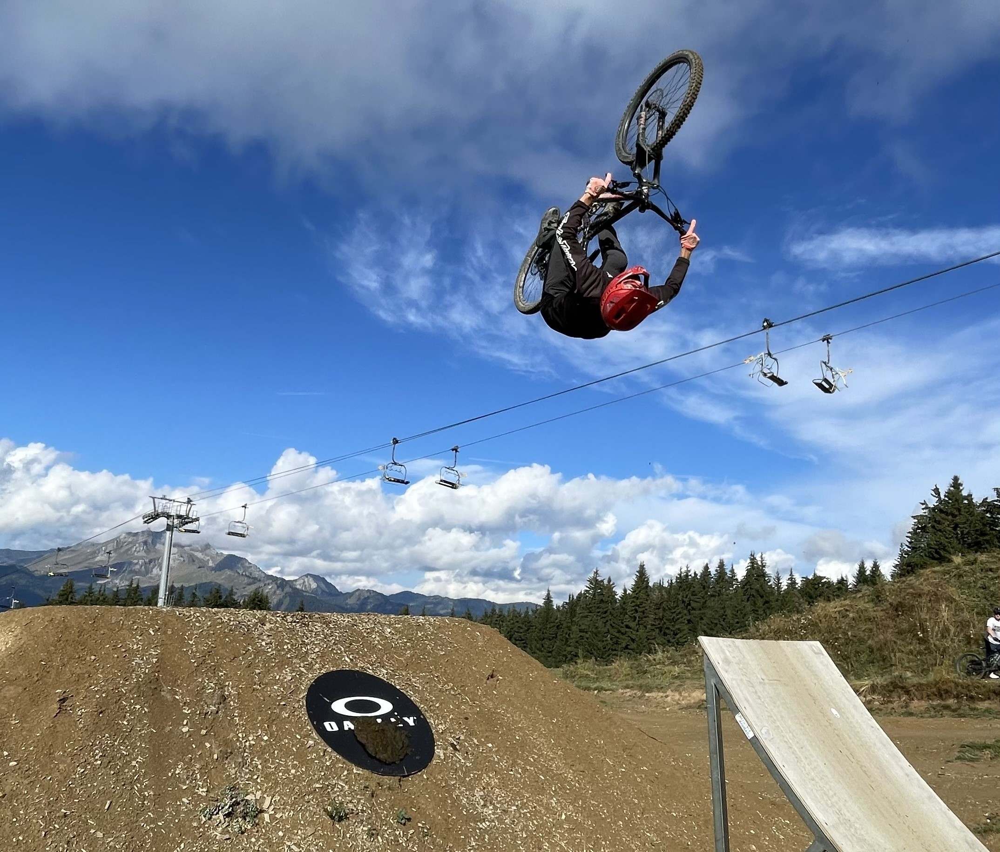
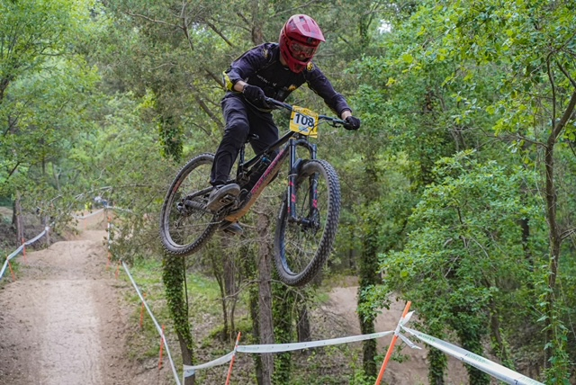
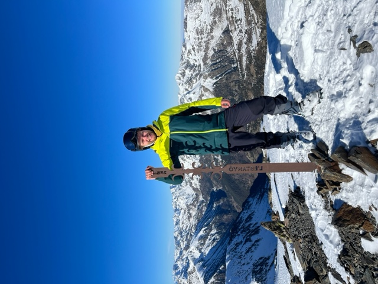
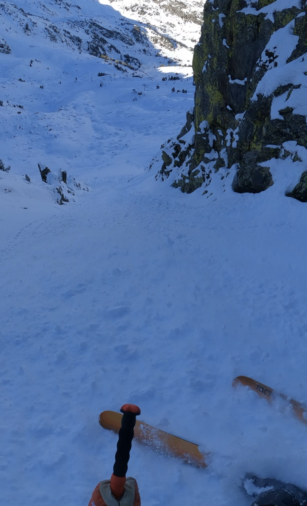
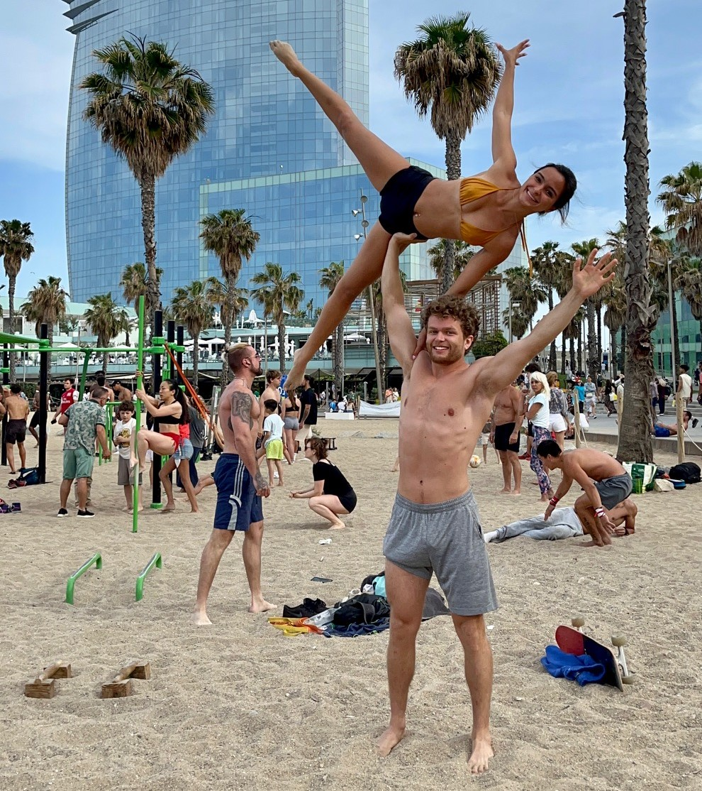

I am a postdoc at Unidistance in the Team of David Belius. Before that, I was a PhD student at Universitat Pompeu Fabra and Université Paris Saclay. My advisors were Gabor Lugosi and Christophe Giraud.
I work on probaility and statistics problems. Most of my research is in combinatorial statistics, where I am interested in inferring the past of growing random graphs from a snapshot of their present state. I also study random graph models introduced to describe real life phenomena. Finally, I am interested in theoretical machine learning and high dimensional statistics.
In other exciting news, in the spring of 2025 I will be visiting the Simons Laufer Mathematical Science Institute for the Probability and Statistics of Discrete Structures program.
If you are interested in collaborating on some exciting projects, please do not hesitate to contact me!
I am also organizing a bi-weekly seminar for young researchers. You can find more informations on this page PSYR seminar. The goal is to share and discover the work of young colleagues in an informal setting. We meet online and I encourage speakers to present accessible talks, followed by discussions and exchange. Most of our meetings are online. If you are interested in participating and/or giving a talk send me an email.
Contact me
simon dot briend @ unidistance.ch
Department of Mathematics
Unidistance Suisse
A sample of what I do in my spare time.
    